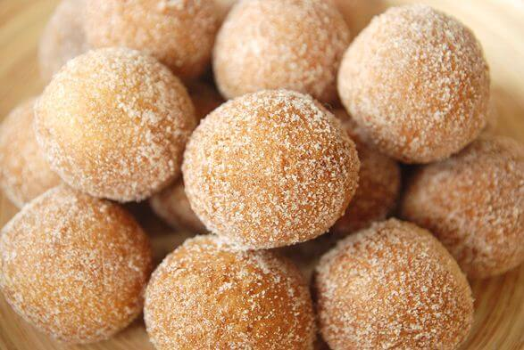

My-Recipe
Home
Nepali
Pastries
Seafood
About us
Contact us

How to make Donuts
Ingredient
280 g (2 cups + 3 tbsp) All Purpose
40 g (3 tbsp) Sugar
1/2 tsp Salt
1/4 Nutmeg
1 Egg
120 g (1/2 cup) Whole Milk
40 g (1/3 cup) Melted Butter
7 g (1 packet) Dried Yeast
Procedure
- Mix the flour, sugar, salt, and nutmeg in a bowl
- Mix the milk ,the butter, the egg, and the yeast in a separate bowl
- While mixing the dry ingredients add the wet ingredients in
- Mix the dough for about 6-10 minutes
- If you are using a stand mixer knead the dough for about 3 minutes on high
- Grease a bowl with oil
- Add the dough in the greased bowl and let it rise for about 2 hours and make sure you cover the bowl